PC Watch
https://pc.watch.impress.co.jp
PC/テクノロジーの最新情報、レポート等でPC業界を先取り
フィード
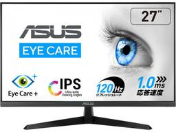
【本日みつけたお買い得品】1万円台で27型IPS＋120Hz！ASUSのアイケアモニターが値下げ中
PC Watch
Amazonにて、ASUSが展開するブルーライト軽減機能を搭載したEye Careモニターがセール価格で販売されている。27型の「VY279HGR」は直近価格から2,820円引きとなる1万3,980円で購入可能だ。
7時間前
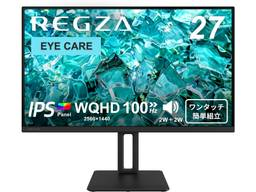
【本日みつけたお買い得品】REGZAの27型WQHDアイケアモニターが1万870円引き、Amazonでセール
PC Watch
Amazonにて、REGZAのモニターがセール価格で販売されており、27型のWQHD(2,560×1,440ドット)対応モニター「RM-27N4SE」が、直近価格から1万870円引きの2万5,980円で購入できる。
7時間前
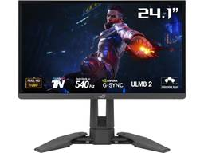
【本日みつけたお買い得品】540Hzが4万円引き！ASUSのゲーミングモニターがAmazonでセール
PC Watch
Amazonにて、ASUSのゲーミングモニターがセール価格で販売されており、24.1型の540Hz対応モニター「PG248QP」が、直近価格から4万1,836円引きの9万9,800円で購入できる。
8時間前
電池残量はマウスを見れば分かる、液晶付きの静音マウスが登場
PC Watch
マウスの電池があとどれだけ残っているかを、マウス本体の画面で確かめられる製品が登場した。サンワサプライが11月11日に発売した、液晶画面付きワイヤレスマウス「MA-WBIRS550」シリーズだ。本体色はブラック、ブラック+ブルー、ブラック+イエローの3色展開で、直販価格は4,780円。
8時間前
【今すぐ読みたい！人気記事】眠っているPC、まだ捨てないで！最軽量級OS「Lubuntu」で古いPCを完全再生 - PC Watch 1
1
PC Watch
Ubuntuは間違いなく優れたLinuxディストリビューションだが、常に最良の選択かと問われればそんなことはない。操作感がとっつきにくいとか、ハードウェアの負荷が高いとか、独自のパッケージシステム(snap)が気に入らないとか、“Ubuntuを選択しない理由”はいろいろある。
10時間前
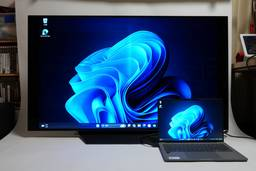
【今すぐ読みたい！人気記事】有機ELテレビをPCモニターに5年使った結果。避けられなかった焼き付きとその顛末 - PC Watch
PC Watch
筆者は最近まで、有機ELテレビをPC用モニターとして使い続けてきた。購入したのはLGの48型有機ELテレビ「OLED 48CXPJA」。2021年3月14日に13万6,800円で購入し、2026年3月22日まで約5年間使用した。そして2026年3月22日、液晶モニターにリプレースした。理由は後で詳しく述べるが、焼き付きと思われる色ムラが発生し、色確認などの作業に支障が出るレベルになったためだ。
10時間前
議事録も資料も会議が終わる前にできている、Claude Meetings 2
PC Watch
Anthropicは11月12日(米国時間)、AIの「Claude」をWeb会議に参加させ、議事録の作成や質問への回答を任せられる新機能「Claude Meetings」を発表した。TeamプランおよびEnterpriseプラン向けにベータ版として順次提供を開始しており、対応するサービスは現時点でGoogle Meetのみ。ほかのサービスにも近日中に対応する予定。
11時間前
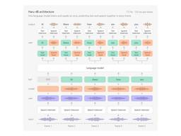
人間のように自然に話せるという音声対話モデル「Haru 4B」無償公開 3
PC Watch
人間のように自然な発声ができ、相槌や割り込みにも対応できる音声対話モデル「Haru 4B」が登場した。higurashiが11月13日に発表したもので、事前学習済みベースモデルのオープンウェイト(モデルの重み)をApache License 2.0のもとでHugging Faceにて無償公開した。推論コードもGitHubで公開している。
1日前
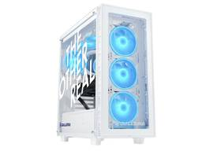
中まで見せるゲーミングPC、GALLERIA スペシャルエディション24万円台から
PC Watch
サードウェーブは、ゲーミングPCブランドのGALLERIAより、高性能と美しさを兼ね備えたという「GALLERIA スペシャルエディション」27モデルを発売した。価格は24万9,980円から。
1日前
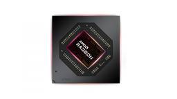
RadeonドライバのSSD過剰書き込みの不具合が修正される 3
PC Watch
AMDは11月12日(米国時間)、Radeon用のオプションドライバ「AMD Software: Adrenalin Edition 26.11.1」をリリースした。
1日前
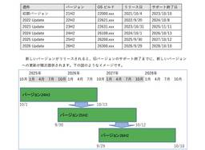
セキュアブート証明書の期限切れも解説、JEITAのWindows 11資料 1
PC Watch
Windows 10のサポート終了から1年あまり、業界団体の解説資料もようやくWindows 11版になった。電子情報技術産業協会(JEITA)は11月13日、「Windows 11のメリットを活用するためのポイント(Ver.5.0)」を公開した。
1日前
【本日みつけたお買い得品】スパイダーマンパッケージのキットカットがオトクにAmazonセール中
PC Watch
Amazonにおいて、ネスレ日本のチョコレート菓子「キットカット」と映画「スパイダーマン」のコラボモデルである「キットカット スパイダーマンコラボ NYチーズケーキ味 9枚×3袋」が10月末頃の販売価格から373円引きとなる1,020円で販売されている。1枚あたりの価格は約38円。
1日前
【本日みつけたお買い得品】約1万5千円引き！3台同時に使える15.6型モバイルモニターがAmazonセール中
PC Watch
Amazonにおいて、KOGODAの15.6型トリプルモニター「X90G」が、直近価格から1万4,440円引きの6万5,360円で販売されている。
1日前
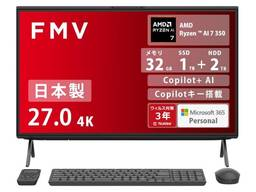
【本日みつけたお買い得品】4K液晶一体型FMVが約2万円引きでAmazonセール中
PC Watch
Amazonにおいて、富士通(FCCL)の4K液晶ディスプレイ一体型デスクトップPC「FMV WF3-L1」(AZ_WF3L1_Z1088)が直近価格の1万8,000円引きとなる34万1,700円で販売されている。
1日前
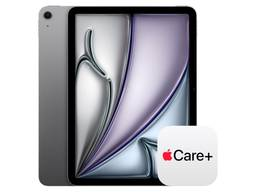
【本日みつけたお買い得品】iPad Airが約1万5千円引き！AppleCare+付きAmazonでセール
PC Watch
Amazonにおいて、Appleの11型タブレット「iPad Air(M4)」のWi-Fiモデルと「AppleCare+」のセット商品「Apple 11インチiPad Air(M4) + AppleCare+セット」が、直近価格から1万5,221円引きとなる12万9,380円で販売されている。
1日前
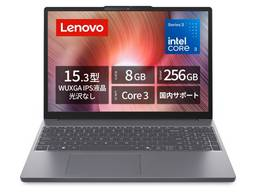
【本日みつけたお買い得品】レノボのノートが約1万8,000円引きの8万円台で販売中
PC Watch
Amazonにおいて、レノボのCore 3搭載15.3型ノートPC「IdeaPad Slim 3」(83RR00LBJP)が、直近価格の1万7,337円引きとなる8万4,800円で販売されている。
1日前
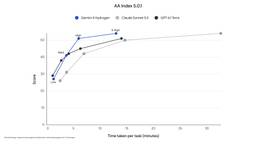
Google、安くて速い「Gemini 4 Hydrogen」。AI指標はArgon上回る 3
PC Watch
Gemini 4世代に、速さと安さを売りにしたモデルが加わった。Googleは11月12日(現地時間)、AIモデル「Gemini 4 Hydrogen」を発表し、同日から開発者、企業、一般ユーザー向けに順次提供開始した。Gemini APIの有料枠での価格は、100万トークンあたり入力が1.5ドル(約240円、1ドル=約160円)、出力が7.5ドル(約1,200円)。無料枠でもレート制限付きで利用できるほか、Geminiアプリでも提供され、無料ユーザーはプロンプトに対してGemini 4 Hydrogenが適切だと自動で判断された場合に使われる。
1日前
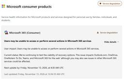
メールが読めない、Teamsにつながらない。Microsoft 365で大規模障害 2
PC Watch
金曜の朝から、Outlookでメールが読めない、Teamsにつながらないという人も多いのではないだろうか。Microsoftのクラウドサービス「Microsoft 365」で、日本時間11月13日深夜ごろから大規模な接続障害が発生している。同日朝の時点でも全面的な復旧は発表されていない。
1日前
標準バッテリで22時間駆動の10.1型タフブック「FZ-G3」
PC Watch
パナソニック コネクトは、10.1型の堅牢タブレットPC「タフブック FZ-G3」を2027年1月から順次発売する。ラインナップは標準モデル「FZ-G3AY10XAJ」、軽量モデル「FZ-G3AY20XAJ」、ワイヤレスWAN(LTE)モデル「FZ-G3AY10BAJ」、ワイヤレスWAN(5G<E)モデル「FZ-G3AY10FAJ」の4モデル。価格はすべてオープンプライス。
1日前